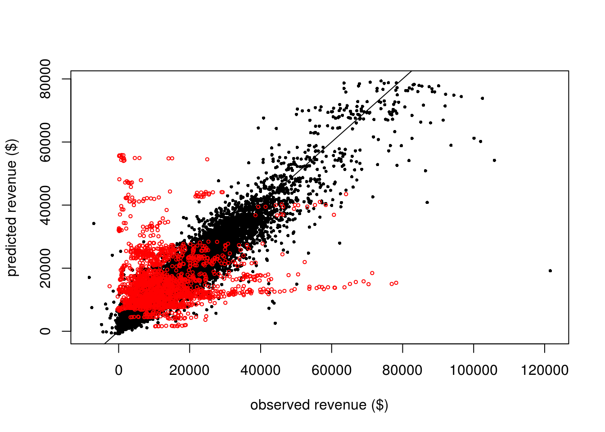
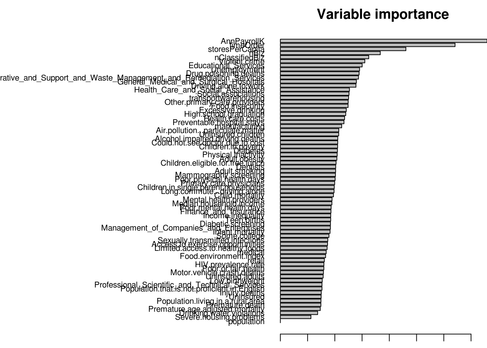

Set paths and load dependencies
## [1] "/mnt/hgfs/projects/insight/models/rf_timeseries"## Loading required package: randomForest
## randomForest 4.6-10
## Type rfNews() to see new features/changes/bug fixes.Use data matrix processed in ../glmmlasso/datamat.Rmd Already scaled to training data and imputed
## Loading objects:
## columnMean
## columnSD
## trnMat
## tstMat
## datamatGood training r2 (0.9) but terrible test r2 (-0.10 or 0.04)
#drop variables that you don't wish to model
excludeVarID=grep("^totalRevenue$|^others$|^yr_month$|^storeID$",colnames(trnMat))
#ensure that response aveMthGrowth is numeric to run randomForest in regression mode
trnMat$totalRevenue=as.numeric(trnMat$totalRevenue)
tstMat$totalRevenue=as.numeric(tstMat$totalRevenue)
#qqnorm(sqrt(trnMat$totalRevenue+10000))
mod_rf=randomForest(x=trnMat[,-excludeVarID],y=trnMat$totalRevenue,
xtest=tstMat[,-excludeVarID],ytest=tstMat$totalRevenue,
importance=T,keep.forest=T)
mod_rf##
## Call:
## randomForest(x = trnMat[, -excludeVarID], y = trnMat$totalRevenue, xtest = tstMat[, -excludeVarID], ytest = tstMat$totalRevenue, importance = T, keep.forest = T)
## Type of random forest: regression
## Number of trees: 500
## No. of variables tried at each split: 23
##
## Mean of squared residuals: 13242944
## % Var explained: 90.32
## Test set MSE: 178957000
## % Var explained: -62.81#get test R^2
mod_rf$test$rsq[mod_rf$ntree]## [1] -0.6281145#or
1-mod_rf$test$mse[mod_rf$ntree]/var(tstMat$totalRevenue)## [1] -0.6280232cor(mod_rf$predicted,trnMat$totalRevenue)^2## [1] 0.903359cor(mod_rf$test$predicted,tstMat$totalRevenue)^2## [1] 0.007310119plot(trnMat$totalRevenue,mod_rf$predicted,cex=0.5,pch=16,
xlab="observed revenue ($)",ylab="predicted revenue ($)")
abline(0,1)
points(tstMat$totalRevenue,mod_rf$test$predicted,col="red",cex=0.5)

Save RF model
save(mod_rf,imptVar,file="mod.RData")